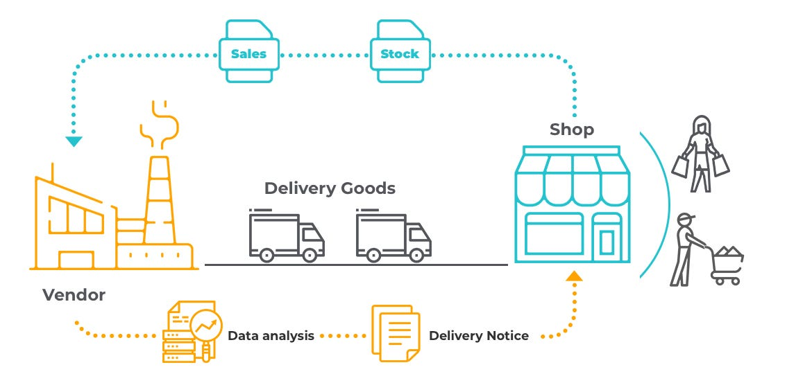
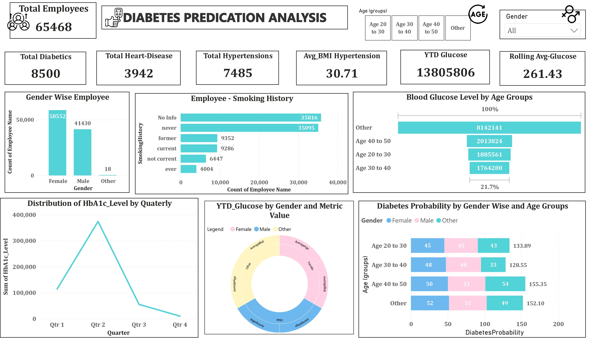
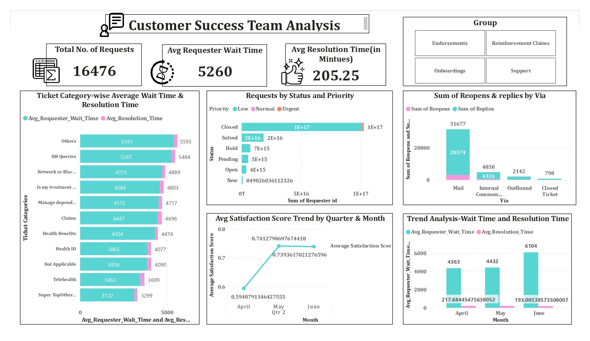
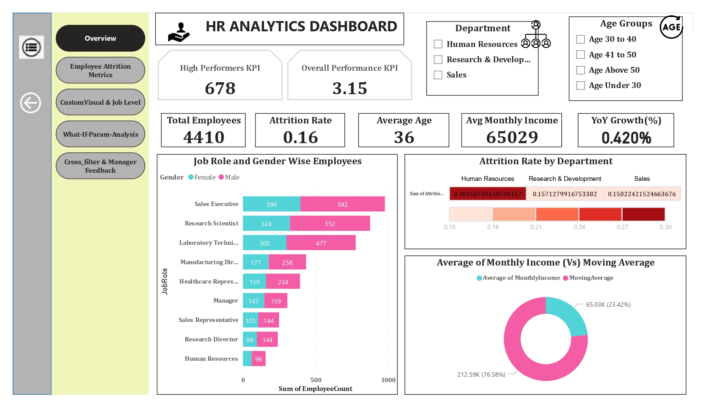
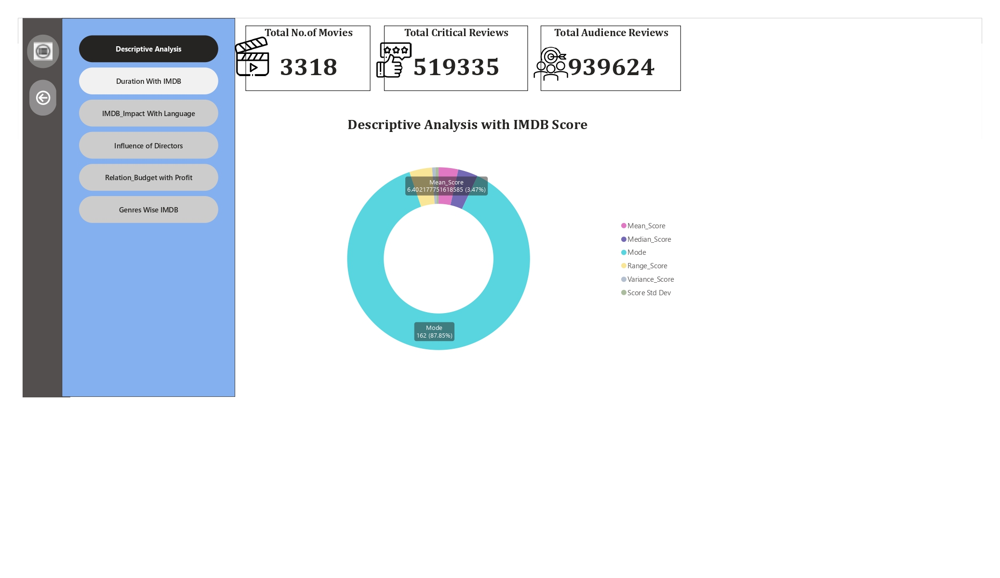
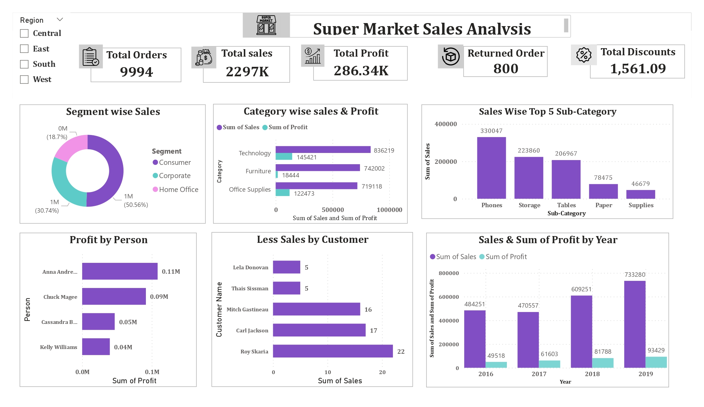

Utilized advanced analytics and machine learning models to analyze insurance company data,
predicting customer conversion with high accuracy. Leveraged techniques such as logistic regression,
decision trees, and gradient boosting to deliver actionable insights for targeted marketing strategies and improved customer retention.
Analysis Salary Discrimination Among Midwestern College Tenure-Track Professors, Drawing from 1980s Legal Proceedings

Implemented machine learning (ML) models to identify potential instances of fraud within the courier supply chain, ensuring the accuracy of charges imposed by business partners.

Utilizing key factors such as gender, Smoking History, HbA1c levels and glucose levels. This comprehensive analysis enables precise predictions of diabetes likelihood within our employee population, empowering informed decision-making for health management initiatives.

Comprehensive customer support analysis, resulting in optimized response times and improved agent performance. This streamlined approach enhances overall customer satisfaction efficiently.

Delivering comprehensive HR metrics to empower data-driven decision-making and strategic planning within the organization. Leveraging advanced data analytics techniques to streamline HR processes, elevate employee satisfaction levels, and mitigate turnover rates.

Utilizing data visualization to offer in-depth insights on movie ratings, genre trends, and audience preferences. The dashboard is designed to empower users in the entertainment industry to make informed decisions regarding strategic planning and content creation.

The actionable insights derived from the supermarket sales analysis dashboard empower management to formulate effective strategies, prioritize initiatives, and make informed decisions. This leads to driving sales growth, enhancing profitability, and improving customer satisfaction.